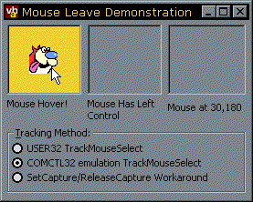

VB5 MouseLeave Demonstration (22K)
VB5 MouseLeave Demonstration (22K)
 VB6 MouseLeave Demonstration (22K)
VB6 MouseLeave Demonstration (22K)
 17 Feb 1999
17 Feb 1999
First Posted
 Subclassing Without The Crashes
Subclassing Without The Crashes

Generating MouseLeave Events for a Window
Almost all of the more recent windows control support a feature known as "Hot-Tracking" - that is, when the control appears to highlight when the mouse moves over it, then returns to normal when the mouse leaves. Common examples include the flat toolbar buttons provided with the Windows Commmon controls.
This article demonstrates how to add this to your controls - properly.
Getting a VB control to highlight when the mouse moves over it is very simple - you just detect the MouseMove event. If you get one of these events, then the mouse is over the control. However, how do you detect when the mouse leaves the control? You can't use MouseMove, because it doesn't fire often when the mouse is leaving the control. And you can't (say) just detect mouse move events over the form the control is on, because the next MouseMove event may occur over another control even if the mouse passes over the form when it moves.
There are many possible solutions to this problem, from the simple (using a Timer, as suggested in the VB5 Owners Area on the Microsoft site - simple, but...) to installing a Windows Hook procedure to give your control a peek at all the Mouse Messages (surely overkill). However, there are some propert ways to do it, and some of them are even part of the OS.
Built-in Tracking Support... Sometimes
The most irritating thing about doing a MouseLeave event properly is the fact that MS have fully implemented this feature, but only in certain OS. NT4 implements this method, as does Win98 and the (possibly) forthcoming Win2000. In Windows 95 you can get at an emulation of the method which is coded in COMCTL32.DLL, but only if IE3.02 or higher is installed. So... if your application needs to support Win95 without a newer COMCTL32.DLL installed, or if you need to run on NT3.51, you can't get OS support to code this correctly.
Here is a summary of what you get:
| OS | MouseLeave Support? |
| NT4+, Win98+ | Yes, using TrackMouseEvent in User32.DLL |
| Win95 with IE3.02 or higher. | Yes, using _TrackMouseEvent in COMCTL32.DLL. Note you can still call _TrackMouseEvent in other OS which have the correct version of COMCTL32.DLL, in which case it calls the OS method directly instead. |
| Win95 with no IE or old version, NT3.51 | No support. In Win95 you can install the later version of COMCTL32.DLL without installing IE. |
To work around these problems, the code I provide here includes automatic detection of OS version and (if required) COMCTL32.DLL version to determine which method to use, and includes a method which will work regardless of OS version (provided the OS runs full Win32 or an emulation, at least!).
TrackMouseEvent, whether with an underscore or not
This method works by posting messages to your window when the mouse pointer leaves or hovers over the window for a specified period of time. You first call TrackMouseEvent supplying the window handle for Windows to start tracking mouse events. When Windows detects the Mouse Leaves the control, it posts a WM_MOUSELEAVE message to the window and then stops tracking the mouse. The TrackMouseEvent event call can then be made again.
This call can also be configured to post WM_MOUSEHOVER messsages too. Mouse Hover is defined as the mouse staying within a specified rectangle for more than a certain length of time. The rectangle and time to hover can be modified by a call to SystemParametersInfo. This works in exactly the same way as MouseLeave does - when it posts an event it then stops tracking.
How to Emulate TrackMouseEvent with SetCapture and ReleaseCapture
If you don't have TrackMouseEvent support, you can emulate its working. using the SetCapture method. This re-directs all mouse movement to a specified Window until it is either called again or ReleaseCapture is called. This means that if you call SetCapture on a window, and then move the mouse out of it, you will still receive a Mouse Move event when the cursor leaves the control, and therefore you can detect that the mouse has left. There are two things to note about this method:
- SetCapture is only applicable to the process that your application is working in - if the user switches to another application, capture is automatically released and you loose Mouse Move events. This can cause problems if the user alt-tabs whilst the mouse is over the control - the control can then get stuck in a MouseOver state even though it isn't.
- VB will also cause SetCapture to be released whenever the user clicks on a control, because VB internally calls SetCapture itself when you click the control and releases it again when the mouse is released. This is why VB can provide you with X,Y coordinates outside the control during the MouseMove event when the mouse is held down but not at other times.
To emulates the operation of TrackMouseEvent method the code subclasses for the following messages:
- WM_ACTIVATE on the parent of the control. By subclassing this message we can detect when the form is deactivated and therefore raise a MouseLeave event if the mouse was over the control before it happened (e.g. it the user uses one of the key codes to switch between applications, such as Alt-Tab, Alt-Esc.)
- WM_LBUTTONUP, WM_RBUTTONUP and WM_MBUTTONUP. When these events occur, the mouse button has been released and VB will internally call ReleaseCapture. This allows the code to start checking for MouseLeave events again (if the mouse is released over the control) or to raise a MouseLeave event if the mouse is released outside the control.
- WM_MOUSEMOVE. This is used to detect the mouse leaving the control.
How to Use the cMouseTrack class
The cMouseTrack exposes the following methods and properties:
- AttachMouseTracking (objTo as Object, Optional eForceMethod As EMouseTrackMethods)
Initialises an instance of the cMouseTrack class for MouseLeave detection of a given object (objTo). The Object must have a hWnd property. You can optionally specify which MouseTracking method you want the object to use by filling in the last parameter. - DetachMouseTracking
Clears up the object and stops checking for MouseLeave messages. Called automatically when an instance of the class terminates. - Method
Returns the type of Mouse tracking method being used by the class. - StartMouseTracking
Starts checking for MouseLeave events. The class will continue checking until the MouseLeave or MouseHover event is fired. - Tracking
Returns whether the class is tracking the mouse or not.
The following code outline demonstrates how this class is used:
' Declare an instance of the cMouseTrack object:
Private WithEvents m_cPTM As cMouseTrack
Private Sub Form_Load()
' Initialise the object to detect the mouse
' leaving picTrack:
Set m_cPTM = New cMouseTrack
m_cPTM.AttachMouseTracking picTrack
End Sub
Private Sub picTrack_MouseMove( _
Button As Integer, Shift As Integer, _
x As Single, y As Single)
' Tracking is initialised by entering the control:
If Not (m_cPTM.Tracking) Then
' Mouse has entered the control; highlight it hot here.
' And start checking for mouse leave:
m_cPTM.StartMouseTracking
End If
End Sub
' Respond to MouseHover and MouseLeave events
Private Sub m_cPTM_MouseHover( _
Button As MouseButtonConstants, _
Shift As ShiftConstants, _
x As Single, y As Single)
' Respond to Hover as required:
' When the Hover event is fired, mouse tracking stops, so
' tell the class to start checking again:
m_cPTM.StartMouseTracking
End Sub
Private Sub m_cPTM_MouseLeave()
' Mouse has left the control, remove the highlight:
End Sub
Conclusion
The cMouseTrack class encapsulates all you need to easily add a MouseLeave event to a UserControl or standard VB control on your form. Its just up to you to use it to do something better than my pop-up Ren and Stimpy sample supplied with the download code...